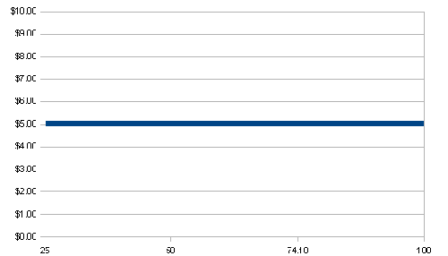

Conversion arbitrage does not typically find its way into books about options trading. It is not surprising, given that the term alone would cause most eyes to glaze over. With a little extra effort, however, this stock and options combination strategy should not be too difficult to fully understand.
To help demystify conversion arbitrage, we begin with an uncomplicated model of conversions, making some simplifying assumptions to get at the core concept. Later, as we proceed through other sections of this tutorial, assumptions are dropped as more complex relationships are introduced into the picture.
While understanding conversion arbitrage does not require an advanced degree in finance or being a veteran market maker, it will require a basic understanding of put and call options (both buying and selling), familiarity with stock buying/shorting and knowledge of the stock dividend process. Conversions incorporate these elements, and a few others, in their cost and profitability structures and in the dimension of risk assessment, so you should brush up on them before getting started. (To learn more, read Put-Call Parity And Arbitrage Opportunity, When To Short A Stock and How And Why Do Companies Pay Dividends?)
Market Efficiency, or Lack Thereof
When we speak of arbitrage of any kind, it is always associated with the idea of taking advantage of some sort of marketplace mispricing - pricing that is out of line with theoretical or fair value. The textbook story is one where the arbitrageur is supposed to play the role of keeping prices efficient by seizing opportunities when prices deviate from fair values, and thus driving them back to efficient levels.
In the options markets, it is the process of conversion and reverse conversion that helps keep put and call prices efficient. If an arbitrage opportunity appears for the options strategist seeking to lock in a potential profit using a conversion strategy, the purchase and sale of conversions act ultimately to remove that opportunity for profit.
Conversions have a long history, which is usually associated with market makers or floor traders who have a trading edge as a result of being on the trading floor, operating with lower margin requirements and having much lower transaction costs.
These key advantages - plus earning interest on short sales in reverse conversions - helped give this approach its reputation of not being for the retail guy. In today's more level playing field for trading, however, conversion opportunities may be available for any astute trader. (Arbitrage is no longer just for market makers; find out more in Arbitrage Squeezes Profit From Market Efficiency.)
If prices are efficient, there is no way to extract a profit from conversion arbitrage above the risk free rate of interest. You would be better off buying a Treasury bill or CD and saving yourself the trouble - not to mention the transaction costs.
As you will see, it is possible to find profitable conversions, especially when incorporating dividend payments and interest earned on credit balances (for reverse conversions). It is absolutely essential to fully understand exactly how to cost-price these strategies before jumping into positions. Otherwise, you may ultimately make money on the trade only to learn that you could have made just as much, or more, by plunking your money down and buying a CD. Or worse, you may actually experience a loss due to not properly understanding the hidden risks. (To learn more, read Don't Let Stock Prices Fool You.)
With this in mind, the availability of efficient online trading tools, deep discount commissions and new margin rules offer traders a better opportunity for finding conversions that provide potential profits above a CD rate or risk-free rate of interest. Hopefully this tutorial will encourage you to further explore this approach.
Conversions involve combining three legs in a complex options strategy that can best be understood in terms of the concept of time value spreading, which is explained below. Typically, conversions are explained in terms of their cost (purchase price) for establishing the position (stock price plus put price minus sale of call). Here we speak of a forward conversion (reverse conversions are discussed below). Throughout this tutorial, we will refer to forward conversions simply as conversions and reverse conversions as reversals. The price paid for a conversion is the amount you pay to establish the position, thus entailing a net cash outlay (debit to the trading account).
Locking in a Time-Premium Credit
A conversion is created by buying or holding a position in a company's stock, then selling call options and buying put options at the same strike price and expiration date as the call options. If this can be executed for a net time-premium credit on the call and put options, you will have locked in a profit no matter where the stock trades before expiration day. You can think of it as a synthetic short (same strike short call/long put) hedged with a long stock position. (Learn more about arbitrage in Put-Call Parity And Arbitrage Opportunity.)
While we are abstracting from some complicating factors, this simplistic model does provide a way to grasp the basic idea in order to get started. Often the conversion idea is presented in terms of the price of buying the options (debit cost) in relationship to the strike of the options. If the cost (purchase price) is less than the strike price, then an arbitrage profit is established. This amounts to the same thing as locking in a time-value credit across the two options, as will be demonstrated in subsequent parts of this tutorial. In the section of this tutorial specifically addressing conversions, some examples are presented to make the idea of locked-in profit more tangible.
The related strategy of reverse conversions (reversals) involves exactly what the name implies, the reverse of a conversion. Here the arbitrageur will be selling the stock short, and then buying calls and selling same-strike, same-month puts. As with a conversion, if this can be executed for a net time-premium credit between the call and put options; there is a locked-in profit for the strategist no matter where the stock trades by options expiration day. Again, we are abstracting from some complicating factors to be addressed later.
Adding Dividends to the Story
As the reader will see, when moving to a more complex understanding of the conversion and reversal, dividends can play a key role in determining potential profit and loss, and while it is possible to remove or at least reduce the dividend risk from the strategy, it will alter the profit potential.
Additionally, the cost of carry is a feature of this strategy that will be incorporated as we move closer to the full model without any oversimplifications. Cost of carry comes into play in conversions, but not reversals. Reversals create a credit balance and are thus free of a cost of carry (interest paid on debit balance). In fact, reversals are strategies that allow for capturing interest payments on the cash proceeds of the short sales in the reversal itself. These interest earnings are then factored into the equation for determining ultimate profitability. (Learn more about interest rates in How Interest Rates Affect The Stock Market.)
However, like dividend payments in conversions, there is no guarantee that interest payments will remain fixed, thus opening a degree of potential risk to the reversal arbitrageur. If the arbitrageur, however, is establishing conversions or reversals by taking the proper steps regarding dividend risk and interest rate risk, it is possible to minimize these potential pitfalls, as will be demonstrated in subsequent sections of this tutorial. (To learn more, check out The Importance Of Dividends.)
Conclusion
Conversions involve locking in an arbitrage profit with a long stock purchase combined with short sale of a call and purchase of a same-strike put with the same expiration date. Reversals involve selling stock short, selling a put and purchasing a same-strike call with the same expiration date. We've just gone over the general idea of conversions and reversals. In the following segment, we look at the pricing structure of a conversion and what makes it work as an arbitrage trade.
In the previous section of this tutorial, we saw that conversions and reversals are three-legged strategies combining stock and options positions. Still remaining with the simplified model, the workings of the conversion strategy will be explained in more detail.
Because a conversion trader buys stock, sells calls and buys same-strike puts (with the same expiration dates), directional risk is removed from the equation. Actually, a conversion is a long stock position combined with a synthetic short stock position, which is created from the short sale of the call and purchase of a same-strike put. (For related reading, see Short Selling Can Be Similar To Buying Long.)
Synthetic Short Stock Combined With Long Stock
As an example, if we constructed an at-the-money conversion, the deltas would be -50 (short call) and -50 (long put), or -100 deltas taken together, and would be exactly opposite the long stock position of 100 shares. This offers a perfect hedge, as gains and losses are offsetting. It is displayed in Figure 1, below.
As mentioned previously, if this can be executed for a net time-premium credit (extrinsic value collected from selling the call is greater than the extrinsic value of the put), an arbitrage profit is available. (Learn more about options strategies in Gamma-Delta Neutral Option Spreads.)
| Conversion | Long Stock | Short Call | Long Put |
| Stock Up | Gains | Loss | Loss |
| Stock Down | Loss | Gain | Gain |
| Figure 1: Any long stock gains are offset by short call/long put losses, leaving a net time-value credit for the conversion arbitrageur. Meanwhile, any long stock losses are offset by short call/long put gains, but also leaving the same net time-value credit for the arbitrageur. |
Expiration Day Outcomes
Now we'll break this down for expiration day. If the stock trades higher by options expiration day, the short call expires in the money (ITM) with zero time value; the put expires out of the money (OTM) (assuming the conversion was done using at- or in-the-money calls). The put time value is lost and the call time value becomes profit. The difference between the two is the profit on the trade. The call gets exercised and the stock is called away leaving the trader flat all legs, left with just his or her arbitrage profit.
If the stock trades lower by expiration (again making the assumption of a conversion done at the money) the call expires OTM with zero time-premium and the put expires ITM (also with zero time-premium). The put is exercised and the stock is put to sellers of the puts, leaving the trader flat, with the initial time value credit turned into a profit. (Help increase your success when trading options; read Stock Option Trading Cycles.)
Reversals
Regarding reversals, the same is true in terms of the net time value (extrinsic value) credit conditions outlined above. Recall that the reverse conversion involves selling the stock short, selling puts and buying same-strike calls (with the same expiration date). Here we have a synthetic long created with the short put/long call options, and this perfectly hedges the short stock position.
| Reversal | Short Stock | Short Put | Long Call |
| Stock Up | Loss | Gain | Gain |
| Stock Down | Gain | Loss | Loss |
| Figure 2: Any short stock up losses are hedged by the short put/long call gains, leaving a net time-value credit for the conversion arbitrageur. Any short stock down gains are offset by short put/long call losses, leaving the same net time-value credit for the conversion arbitrageur. |
As displayed in Figure 2, if the stock trades lower by the time of the expiration of the options, the short put expires ITM with zero time premium and is exercised, thus removing the short position. The call expires worthless, out of the money. Again, if the reversal was established for a time-value credit (put extrinsic value > call extrinsic value), this will leave a profit (assuming no commissions, as we do throughout this tutorial) equal to the size of the time-value credit.
Finally, if the stock trades higher by the expiration date of the options, the long call expires in the money with zero time value and is exercised, thus removing the short stock positions. When you exercise a call you get a long stock position. Since you are already short stock, this flattens out the short stock position. (Try a new approach to covered calls, read An Alternative Covered Call: Adding A Leg.)
Summary
In this tutorial section, general outcomes for conversions and reversals were summarized. For a conversion where you are long stock, we looked at the results of a stock trading higher or lower by expiration. For reversals where you are short stock, we walked through the same two scenarios. We explained that the resulting profit would depend on the size of the time-value credit obtained in the initial setup of the strategies. In the next section, we will begin working with an example of a conversion with actual prices to demonstrate why this occurs.
With a forward conversion (herein, referred to as a conversion), it is possible to achieve a risk-free profit if same-strike calls and puts are priced out of line (defined here as time value not equal). This means that a call can be sold and a put purchased at the same strike and in the same month, but at different time values (call time value > put time value). The different time values on the call and put options offer an opportunity to lock in a profit by use of a conversion. Here we will look at an example to illustrate the point. (To read more about time value, check out The Importance Of Time Value.)
Let's take a look at a forward conversion on a stock we will call ABC. The inner workings of the strategy will be revealed when we start working with some numbers. However, we will keep the example simplified (leaving out dividends, interest and a few other issues) until later.
Forward Conversion Example
Suppose ABC stock last traded at $73.95 with an ask price of $74.10. Meanwhile, ABC's December 75 calls and puts were showing a bid and ask respectively of $4.95 (call) and $5.80 (put). At the bid/ask pricing of the options, a conversion could be purchased for $74.95. Recall that there are two ways to assess whether a profit exists at these prices. We will now walk through both.
First, the quickest way to look at the pricing is to ask if the purchase price for the conversion, $74.95, is less than the strike price, $75. If it is, then a conversion profit exists. If you fill it for 5 cents under the strike price, there would be a profit of $5 per conversion. (Learn about other investing strategies in Profit On Any Price Change With Long Straddles.)
Let's take a second look from our time-value perspective. Another way to think of this conversion is to compare time value (extrinsic value) on the call and put options. Figure 3 provides a breakdown of the two types of value in options. There is both intrinsic and extrinsic value in each option, the latter being the basis for potential arbitrage profit with a conversion.
| Option Month | Option Type | Option Strike | Option Price | Intrinsic Value | Time Value |
| December | Short Call | 75 | 4.95 (bid) | 0 | 4.95 |
| December | Long Put | 75 | 5.80 (ask) | .90 | 4.90 |
| Net Time Value= |
$.05 |
| Figure 3: ABC stock last traded at $73.95, with an ask price of $74.10. The example above uses the ask price for the purchase price of the stock. As can be seen, this produces a 5 cent net time-value credit per share, which translates into $5.00 per conversion (buy 100 shares, sell Dec. 75 call and buy Dec. 75 put). |
If the price of ABC stock at the expiration of December options is $100, the profit on the position is $5. If the price of the stock at expiration of the December options is $50, the profit is still $5. This is presented inFigure 4. For example, at the price of $100, the Dec. 75 call would lose $20.05, the Dec. 75 put would lose $5.80 (total loss of $25.85), but the stock position would gain $25.90, leaving a 5 cent per share gain. Figure 1, furthermore, presents the profit/loss payoff diagram of this conversion at all prices, showing $5 in profit at any price. (Learn more in Stock Option Expiration Cycles.)
| Conversion
Legs | Position
Entry Price | Settlement
Prices @ 100/50 | Position
Gain/Loss @ 100 | Position
Gain/Loss @ 50 |
| Dec 75 Short Call | 4.95 (sale) | 25/0 | -20.05 | 4.95 |
| Dec 75 Long Put | 5.80 (buy) | 0/25 | -5.80 | 19.20 |
| Long Stock | 74.10 (buy) | 100/50 | 25.90 | -24.10 |
| 74.95 < 75 | $.05 ($5.00) | $.05 ($5.00) |
| Figure 4: Calculation of profit/loss with stock price at $50 and $100. The table above shows the gains and losses at the two assumed expiration prices for ABC stock and the associated same outcomes for the three legs of the conversion. |
|  |
|
Figure 5: Profit/loss diagram for ABC stock December 75 conversion |
| Copyright © 2009 Investopedia.com |
Again, this outcome results from having an initial net time-premium credit (extrinsic value collected from selling the call is greater than the extrinsic value on the put) that amounts to an arbitrage profit.
In the ABC stock example, Figure 6 shows an alternative calculation to determine profitability of a conversion. The purchase price we know must be less than the strike used in the conversion. But here, we see that the strike price plus call price, minus the stock price plus put price arrives at the same 5-cent per share profit. This is seen in both the time-value based calculation and the purchase-price-greater-than-strike-price calculation.
| Conversion Profit Calculation | |||
| (Strike Price + Call Price) | (Stock Price + Put Price) | ||
| 75 + 4.95 = $79.95 | Minus(-) | 74.10 + 5.80 = $79.90 | Profit=$0.05 |
| Figure 6: Conversion profit assumes carrying costs and no dividend payment. |
In the calculation inFigure 6, the conversion profit assumes no carry costs or dividend payments. The reality of trading is not so simple and actual profitability includes such things as dividend payments (if any), interest paid on debit balances (carrying costs) and any transaction costs (commissions/fees).
Conclusion
This section of the tutorial provided an example of a December 75 conversion on a hypothetical stock, which was used to flesh out the bare bones approach with which we began. By selling the December 75 call for more time premium, then purchasing the December same-strike put, a small arbitrage profit was secured, but here we saw two additional calculation methods used to arrive at this same outcome. Before relaxing key assumptions in our simple conversion story, let's take a closer look at a reversal to examine its inner workings.
The related strategy of reverse conversions (or reversals) involves exactly what the name implies, the reverse of a conversion. Here the arbitrageur will be selling (instead of buying) the stock short, and then buying a call and selling a same-strike, same-month put. (Read more about arbitrage in Trading The Odds With Arbitrage.)
As with a conversion, if this can be executed for a net time-premium credit between the call sale and put purchase, you will have locked in a profit no matter where the stock trades before expiration day. To remind you, at this level we are abstracting from some complicating factors to provide a way to better grasp the basic idea.
Just as a conversion involves three legs in the strategy, so too does a reversal. The rule of thumb for determining profitability applies with one minor alteration. Recall that conversions can be explained in terms of the cost of establishing the positions (stock price plus put price minus sale of call), which is a debit price. Here we look to compare a credit price (received for the reversal) to the strike price used in the trade to look for potential profitablility.
When speaking of conversions, as long as the debit sale price is less than the strike price, a conversion profit exists (leaving aside the complicating factors we will turn to in subsequent sections). With a reversal, on the other hand, the same rule of thumb applies but the credit received for establishing the position must be greater than the strike price for a potential arbitrage profit to exist. (Learn more about options in Do Option Sellers Have A Trading Edge?)
Using Reversals to Capture Time-Value Credit
Unlike the conversion, where you have to pay for the position with a net cash outlay, a reversal involves selling short the stock and the put, which brings in a credit to the account. Leaving aside the interest earnings potential on this credit balance for now, the size of the credit must exceed the strike price for a reversal profit to be established. This reduced form model should allow for grasping the core concept of the reversal without overwhelming you with complicating details.
While a reversal involves selling stock short and then buying a call and selling a same-strike and same- month put, it must be executed for a net time-premium credit. This is simply stating, in a different way, that the overall pricing conditions (overall credit received from sale of reversals > the strike price) need to lock in a profit. Above we mentioned that the credit from the reversal must exceed the strike price, so we are simply boiling all this down to show that it amounts to establishing a net time-value credit between the put sold and call purchased.
Figure 7 shows some hypothetical prices (altered from our previous actual example) for ABC stock to illustrate the idea of a December 75 reverse conversion's potential arbitrage profit as a time-value credit.
| Option Month | Option Type | Option Strike | Option Price | Intrinsic Value | Time Value |
| December | Long Call | 75 | 4.90 (ask) | 0 | 4.90 |
| December | Short Put | 75 | 5.85 (bid) | .90 | 4.95 |
| Reversal Profit | Net Time Value= |
$.05 |
| Figure 7: ABC\'s stock has an assumed ask price of $74.10 and options prices slightly altered to show how a reversal would generate a small arbitrage profit. The 5 cent net time-value credit translates into $5 per reverse conversion, which requires selling 100 shares short at $74.10, selling a December 75 put at $5.85 and buying a December 75 call at $4.90. |
Often the reversal is presented in terms of the price of selling the stock (credit cost) in relation to the strike of the options. If the credit received from selling it is greater than the strike price, then the arbitrage profit is established, as seen in Figure 8, where the position entry price shown is $75.05, which is greater than the strike of $75 by 5 cents.
For example, at the price of $25, the December 75 long call loses $4.90 and the December 75 short put loses $19.15 (for a total loss of $24.05), but that is offset by a gain of $24.10 on the short stock, leaving a per-share gain of 5 cents. As was seen in Figure 7, we arrived at the same profit we saw above by showing how this is simply the same as collecting a net time-premium (or extrinsic value) credit.
| Reversal
Legs | Position Entry Price | Positions Settlement Prices @ 100/50 | Position
Gain/Loss @ 100 | Position
Gain/Loss @ 50 |
| Dec 75 Long Call | 4.90 (buy) | 25/0 | 20.10 | -4.90 |
| Dec 75 Short Put | 5.85 (sell) | 0/25 | 5.85 | -19.15 |
| Short Stock | 74.10 (sell) | 100/50 | -25.9 | 24.10 |
| 75.05 (> 75) | $.05 ($5) | $.05 ($5) |
| Figure 8:Here we demonstrate the same profit of $5 is available at any price for this reversal. We take only two prices, however, to simulate the outcomes (it would be true for any prices on the scale). Wecalculate results based on an assumed stock price of $50 and $100 for the stock at options expiration day. The table above shows the same gains at the two assumed expiration day prices for ABC stock. |
| Reversal Profit Calculation | |||
| (Stock Price + Put Price) | (Strike Price - Call Price) | ||
| 74.10 + 5.85 = 79.95 | Minus(-) | 75.00 + 4.90 = $79.90 | Profit=$0.05 |
| Figure 9: Reversal arbitrage profit in this model assumes no carrying costs and no dividend paid or received. Here you can see that the position establishes a $5 arbitrage profit as was demonstrated inthe other calculation methods shown in Figure 7 and Figure 8. |
As the reader will see, when moving to a more complex understanding of a conversion and reversal, dividends can play a key role in determining potential profit and loss. While it is possible to reduce the dividend risk from the strategy through the proper assessment of trades, it will remain a potential risk.
Additionally, the cost of carry is a feature of this strategy that will be incorporated as we move through the different parts. It comes into play in the conversion but not the reversals. Reversals create a credit balance and are thus free of a cost of carry (defined as the interest paid on a debit balance).
In fact, reversals are strategies than allow for capturing interest payments on the cash proceeds of the short sale (put plus short stock) in the reversal itself. These interest earnings are then factored into the equation for determining ultimate profitability. However, like with dividend payments in conversions, there is no guarantee that these variables will remain fixed once in a conversion or reversal, thus opening a window of risk to the arbitrageur. (Learn more in Using Options Instead of Equity.)
Conclusion
Reversals on stocks involve selling the shares short, selling a put and buying a same-strike call with the same expiration dates. Here we demonstrated how such a strategy could make a profit if the sale price of the reversal is above the strike price used. When this condition is met, there is a locked in time-value credit that represents an arbitrage profit. However, we are still excluding the possibility of dividends in the equation, a subject to which we now turn.
Up to this point we have been concerned with a simplified conversion model, where there are no carrying costs, interest earnings on credit balances, dividend payments or payouts to be concerned with as an arbitrageur. Now we will begin to relax some of these assumptions. While not all stocks a conversion arbitrageur is following will pay dividends, those that do can substantially alter the equation. For the conversion arbitrageur this can potentially be a source of additional profit, but with it comes some associated risk. (Find out more about the risk/reward payoff in Naked Options Expose You To Risk.)
When dividends become part of the equation, the dividend payment can be earned by the arbitrageur because he or she is long in the stock. Provided that the ex-dividend date (ex-date) for the stock is between entry date and expiration date of the conversion, it is possible to add to any conversion profit that has been locked in by the amount of the dividend to be paid. Like most things, more profit means more risk and often the option pricing for a conversion contains the expected dividend payment, or part thereof, and there is no guarantee that a dividend is going to be paid. (Find out more in How Dividends Work For Investors.)
Let's not get ahead of ourselves. First, let's add dividend payments into the conversion profit equation so that is clearly understood.
Figure 10 contains the profit calculation for a conversion with dividend payment. As shown, using the April 100 ABC stock conversion (the April options are used here because the expiration date must be later than the ex-dividend date in order to capture the dividend). ABC stock is scheduled to pay a dividend of 40 cents in March 2009. Therefore, the conversion price actual cost is reduced by this amount. Suppose we have a price of $101.08 for the April conversion.
| April 100 Conversion Profit Calculation w/ Dividend and no Carry Costs | |
| (Conversion Price - Dividend) |
Profit=$0.32 |
| $101.08 - $.40 = $99.68 | |
| Figure 10: Conversion profit assumes no transaction or carrying costs but now includes a dividend payment of $.40 per share on ABC stock. Here April 100 \'09 strikes are used. |
This price is eight cents above the strike price. Therefore, the conversion itself is not profitable because the purchase price $101.08 is greater than the strike price, as we demonstrated in the previous sections on conversion profitability determination. But when we factor in the receipt of a dividend payment of 40 cents, the cost drops to $99.68, leaving room for a profit of 32 cents per share or $32 for each conversion. This looks great provided that the dividend is not canceled or lowered. (Learn more in Is Your Dividend At Risk?)
Leaving aside carrying costs, the conversion could not lose provided that the dividend is not cut by more than $32. Recall that it is possible for a surprise dividend cut to be announced or, on the plus side, a dividend increase, which would add to the potential profitability of the conversion.
Reversals and Dividends
When doing reversals, it should be made clear that the short stock position in the trade means that the strategy carries dividend risk. If you are short stock going into an ex-dividend date, the reversal strategist will need to pay the dividend, not earn it. (Understanding the dates of the dividend payout process can be tricky. We clear up the confusion in Dissecting Declarations, Ex-Dividends And Record Dates.)
Therefore, when pricing reversals it is important to factor that payment into the equation, or to avoid dividend-paying stocks to sideline that risk factor in the pricing. The reversal strategist brings in a credit balance with the sale of the put and stock short sale. Therefore, interest is earned on this balance. We take up this aspect in the following section, along with the interest costs for conversions.
Summary
In this part of the conversion tutorial, the simple model of a conversion with no dividends was relaxed. While dividends ultimately lower the cost of the conversion, they carry with them potential risk. For reversals there is dividend liability, but interest earnings on short sale proceeds help offset that cost. Profit that essentially amounts to a dividend capture can be realized with a conversion strategy, although not without certain risks.
In the previous section, the concept of dividend payout was introduced. Now we take another step closer toward reality by introducing additional elements of reward and risk: interest rates and cost of carry. Recall from the previous part of this tutorial that there was a dividend profit potential of $32 in the April 100 conversion (see Figure 11).
Note that on its own, the conversion itself is not profitable because the purchase price $101.08 is greater than the strike price, as we demonstrated in the previous sections on conversion profitability determination. But when we factor in the receipt of a dividend payment of 40 cents, the cost drops to $99.68, leaving room for a profit of 32 cents per share, or $32 for each conversion. This looks great provided that the dividend is not canceled or lowered. But what about a change in carry costs?
Suppose now that there are carry costs of 0.48 % (just under one half of one percent annually). This position would cost $21 in interest charged to hold open with a debit balance for the 158 days of life to the options. (To learn about minimizing carry costs, read Don't Let Brokerage Fees Undermine Your Returns.)
| April 100 Conversion Profit Calculation w/ Dividend and No Carry Costs | |
| (Conversion Price -Dividend) |
Profit=$0.32 per share (or $32) |
| $101.08 - $.40 = $99.68 | |
| Figure 11: Conversion profit assumes no carrying costs but now includes a dividend payment of 40 cents per share on ABC stock. Here April 100 \'09 strikes are used. |
In Figure 12, this would leave just 11 cents per share of conversion/dividend profits, or $11 per conversion. The debit balance is $101.08 x 100 = $10,108, to which is applied the cost of carry charge ($10,108 x .0048/360 x 158 days in the trade = $21).
| April 100 Conversion Profit Calculation w/ Dividend Minus Carry Costs | |
| (Conversion Price - Dividend) | Profit=$0.11 |
| $101.08 + $21 - $.40 = $99.89 | |
| Figure 12: Conversion profit assumes total carrying costs of $21 and includes a dividend payment of 40 cents per share on ABC stock. Here April 100 \'09 strikes are used. |
| Conversion Outcomes | Dividends | Interest | Profit |
| Profitable | $33 earned | $23 paid | $10 |
| Breakeven | $23 earned | $23 paid | $00 |
| Loss | $23 earned | $33 paid | -$10 |
| Figure 13: Three scenarios are presented for the conversion strategist. Profitable, breakeven and loss, which depend on dividend costs and interest rates paid on credit balances. Here we assume that the credit balance is equal to the strike price of the reversal. Therefore, there is no arbitrage profit per se, simply a potential profit that the dividend generated over interest charged. |
In this scenario, carry costs could increase or dividends could be cut or eliminated, thus eliminating this small profit or both could occur at the same time. Figure 13 shows the effects of changes in these two variables on a conversion. In Figure 13, a conversion profit of $10 goes to zero and then to a loss of $10 when dividends are cut by $10 to $23 from $33 (breakeven) followed by a $10 rise in cost of carry, leaving an overall loss for the position.
| Reversal Outcomes | Dividends | Interest | Profit |
| Profitable | $23 paid | $33 earned | $10 |
| Breakeven | $33 paid | $33 earned | $00 |
| Loss | $33 paid | $23 earned | -$10 |
| Figure 14: Three scenarios are presented for the reversal strategist. Profitable, breakeven and loss, which depend on dividend costs and interest rates paid on credit balances. Here we assume that the credit balance is equal to the strike price. Therefore, there is no arbitrage profit per se, simply a potential profit from interest earned over the dividend paid. |
Reversal, Dividend Risk and Interest Earnings
Reversals have potential profit arising from interest earnings on credit balances, which are above any locked-in arbitrage profit on the three-leg strategy. Taking a look at Figure 14, here we see that a dividend to be paid by the reversal strategist during the life of the strategy is first $23, with interest earned on the credit balance $33, leaving a profit of $10 per reversal. If the dividend is increased while in the trade, the dividend cost rises, resulting in a change of $10 (from $23 to $33), thus erasing the potential for a profit on this trade. Finally, in the third scenario, the dividend is increased and the earned interest on credit balances falls by $10 to $23 from $33 (this could result from changes in market conditions that fluctuate over time), leaving the strategist with a loss of $10 overall. (Read Managing Interest Rate Risk to find out more.)
Currently, we are leaving out compound interest calculations, which at high interest rate levels might make a material difference. We are also assuming that there are no transaction costs. Given the rates earned on interest are known for the day, and the dividend cost is available to the strategist on that day, it is possible to know if the reversal is making money on any given day. Obviously, if a surprise dividend increase occurs during the life of the trade, it will most likely turn the trade into a loss. The interest earned will not be sufficient to cover the dividend costs. On the other hand, a surprise dividend cut would add profit to the position, as would rising rates.
Basically, the interest potential is a source of profit and the dividend payment is the cost. Depending on how much interest can be earned on the credit balances (depends on prevailing rates and strategist status), it is possible to establish a reversal that is known to be earning a profit each day. We will return to the issue of credit balances and interest earned in the following section covering issues related to interest costs and profits. (Discover the issues that complicate dividend payouts, read Dividend Facts You May Not Know.)
Summary
Interest rates impact both carry costs and earnings on credit balances, two important factors in conversions and reversals, respectively. We have just looked at their potential to impact profitability in both strategies, showing that a rise in carry costs will reduce a conversion profit and improve performance of a reversal. Meanwhile, a fall in interest rates will have the opposite impact, when other things remain the same (ceteris paribus).
While called arbitrage, conversions should not be construed as trades that never have any risk. Nevertheless, after identifying some major risk factors, we will present here some important steps toward reducing or even eliminating these factors. (Just because you're willing to accept a risk, doesn't mean you always should; check out Risk Tolerance Only Tells Half The Story to find out why.)
Assuming that a conversion strategist is able to lock in a small profit from buying the conversion (i.e, debit price is less than strike price), and that a reversal strategist is able to secure an arbitrage profit from sale of a reversal (i.e., credit price is greater than the strike price), we can now isolate the potential risks to this so-called arbitrage profit.
Dividends
As we saw in Part 6 of this tutorial, dividends are a source of potential profit for the conversion strategist and a cost for the reversal strategist. Since dividends are never guaranteed (they can be cut or increased by company decision), the strategist cannot control this risk factor unless a policy of avoiding dividend paying stocks is adopted. Obviously, by not applying conversions and reversals to dividend-paying stocks, there is no risk for the conversion strategist. However, if a company announces it will begin paying a dividend and the declared dividend date falls before the reversal expires, the reversal strategist is going to have costs rise, and if these costs are greater than the initial arbitrage profit, this will result in a loss (unless interest is enough to offset that cost).
Dividends are a great source of potential profit for the conversion strategist, so it may make sense to do the proper research on dividend-paying stocks and try to capture that dividend payment in addition to any pure conversion profit. If risk is diversified and proper research is conducted, it may be possible to enhance potential gains well beyond the simple conversion arbitrage profit level in exchange for taking on dividend risk. However, keep in mind that conversion strategists earn more if a surprise dividend increase is declared. (Learn more in Dividends, Interest Rates And Their Effect On Stock Options.)
Early Assignments
If there is an early assignment, resulting in the long stock position in a conversion being removed, no dividend will be earned and a conversion strategy dependent on earning that dividend may experience a loss. If the conversion was put on at exactly break even (strike price = debit charge to buy conversion), then the loss will be equal to the carry costs, which could be significant depending on when the early exercise occurs. If the conversion was established with enough profit to cover carry costs to term then there would be no loss (ignoring commissions, which we've done throughout this tutorial). There is also the issue of the left-over long put, which might have a little time premium left. If the long put is left open, it does have the potential to gain more value, or it could be liquidated to lock in what little value is left on it once the early assignment takes place. (Get more info in Profiting From Stock Declines: Bear Put Spread Vs. Long Put.)
One way to minimize this risk is to establish conversions that have substantial time value on the short call, which can be done by using options that expire well past the ex-dividend date (ex-date). But here, of course, there is a trade off because the longer you remain in the position past the ex-date, the larger your cost of carry. However, it may be possible to close the conversion following the ex-date and take a profit at that point, or hold the position open past another ex-date. If the call options are trading below parity before ex- date, there is a good chance they will be exercised. Any time value on the option (meaning it is above parity) when the stock goes ex-dividend, on the other hand, will likely prevent it from being exercised. (Find out how to keep your dividends out of the tax man's hands. Read Make Ex-Dividends Work For You.)
Reversals suffer from early assignment as well. Here, the short puts would be assigned thus removing short stock, credit balances and interest being earned daily. Depending on whether the position was established with a dependence on interest earnings for a profit, it could experience a loss, especially if a dividend risk was already incurred. If the interest earned was a substantial portion of the targeted profit, covering dividend fixed costs, then an early assignment might turn the trade into a loser. There is a left-over long call, which might gain value if held until expiration, one offsetting factor, if not closed.
Carry Costs
We explored the subject of carry costs in the previous part of this tutorial. For conversion strategists, this takes the form of interest charged on debit balances, and this cost is not fixed. Each day, there are changes in market rates of interest and the benchmark rates used to compute a broker's carry charge for a conversion debit balance. Therefore, the conversion strategist has little control over this variable. (Learn which tools you need to manage the risk that comes with changing rates, read Manage Interest Rate Risk.)
Obviously, it's a good idea to allow room for carry rate increases in order to achieve an arbitrage profit. You may want to take on some dividend risk to buffer against expected rate increases when setting up a conversion. Here you might be adding dividend reduction or elimination risk, but if that seems less likely than a rate increase for your carry costs (usually these are tied to Fed funds rate), then this might make sense. Some strategist might hedge rising rates risk by shorting financial instruments that fluctuate with the Fed funds market to lock in a carry cost for the life of the trade. Meanwhile, the reversal strategist is not subject to carry costs and therefore avoids this risk.
Interest Rates
There are no carry costs for reversal strategists. Instead, in their profit calculations, reversal strategists depend on the interest paid on credit balances. The best way to minimize this risk is to minimize the dependence on interest earned for the profitability of the strategy. If interest earned falls, it will reduce profit, but may not eliminate it. Another approach might be to invest (assuming you have that option) in interest-bearing instruments like CDs or Treasuries to lock in a rate on the credit balances, instead of letting them fluctuate throughout the life of the trade. Alternatively, if rates are expected to move higher over the life of the trade, it would be advantageous to not lock in a rate on interest earned on credit balances, so that with a rise in interest rates there would be additional profit potential on credit balances.
Expiration Day
One last issue is the expiration day level of prices for the stock position, in either a conversion or reversal. If the price is well above the short call in the conversion, it is not an issue as the call is deep in the money (ITM) and will be automatically exercised, thus taking away the long stock position. Meanwhile, the long put expires out of the money (OTM). This is also not an issue if the call is out of the money and the put in the money. The put will be exercised and this removes the stock position. All is fine as long as you know one side will be in the money at expiration. (Learn more in Stock Option Expiration Cycles.)
If the stock is trading near the strike of the conversion on expiration day, a problem presents itself to the strategist. If the stock settles right on the strikes, not as rare as one might think, there will be no exercise of either put (for the reversal strategist) or call (for the conversion strategist). This means that the conversion strategist will be left with a long stock position (un-hedged) and the reversal strategist left with a short stock position (un-hedged) over the weekend, with all of the arbitrage trader's risk going into Monday's market open.
Essentially, the issue arises because it is not clear whether you will be assigned on short calls for the conversion strategist and short puts for the reversal strategist. While there are techniques available for reducing and even eliminating this risk, this will require diligent monitoring and adjusting (rolling) short legs on expiration day to minimize risk.
Summary
In this part of the tutorial, we have reviewed the major risk concerns for strategists using conversion and reversal strategies. Areas of risk for conversion strategists include dividend cuts, carry rate increases, early assignment and the stock price being equal to the strike price on expiration day. For the reversal strategist, the risks include surprise dividend increases, decreasing credit balance rate, early assignment and expiration day settlement prices for the stock being equal to the strike price used in the conversion. We've gone over the nature of these problem and some remedies for mitigation.
As we have seen, conversions and reversals involve combining three legs in complex options combination strategy aimed at establishing an arbitrage profit. We have demonstrated that at a stripped-down level of the options, it is simply a way to lock in a net time-value credit.
In practice, this is a positive theta (time-value decay rate) trade where time-value decay works in our favor, as the options premium declines to zero at expiration. As long as we are not net buyers of time premium, with a conversion or reversal, we can have our profit, at least in the simplified model used in the tutorial. (To learn more about arbitrage, check out Trading The Odds With Arbitrage.)
The simple model we initially worked with abstracted from carry costs and other cost and risk factors so we could isolate the core idea. Once that was done, we moved to adding in additional variables, namely dividends, interest rates and cost of carry. Here we saw that we need to pay special attention to the carry rates of interest, as well as dividends that might be paid (for conversions) or charged (for reversals) to our trading account.
Conversions are a buying strategy and reversals are a selling strategy, which creates some interesting differences not apparent on the surface. Reversals, we showed, have potential to earn interest on their credit balances. Conversions, meanwhile, provide a way to capture dividends, and this too can be a sizable portion of potential profitability. Both, of course, are not risk free and may turn arbitrage profits into losses.
Last, we looked at various risk factors that both conversions and reversals carry with them, and as a result saw that the simple model can get quite complex in terms of different determinants of the outcomes to these combination strategies. (Read more in Do Option Sellers Have A Trading Edge?)
For conversions, the key risks include: surprise cuts to or elimination of dividends, interest rate increases, early exercise and strike price proximity to the underlying on expiration day. Key reversal risks include: surprise dividend increases or declarations of a dividend to be paid on a stock not paying a dividend, interest rate decreases, early exercise and proximity of the underlying to the strike price of the reversal on expiration day. (Check out Going Long On Calls to learn how to buy calls and then sell or exercise them to earn a profit.)
While an entire book could be written on this topic, the core concept of a conversion and reversal can be grasped with this tutorial. For additional reading on the topic, one might wish to read Larry McMillan's Options As A Strategic Investment, which provides discussion on the topic of conversions and related strategies.
Keep in mind that this approach to trading options requires attention to a number of variables and is not a guarantee of profit. Even with an arbitrage profit on the position, it is possible to lose money with these trades. Yet with responsible management of the strategy, and putting in the time to do proper research, these risks can be minimized and made manageable.
{kind=link}